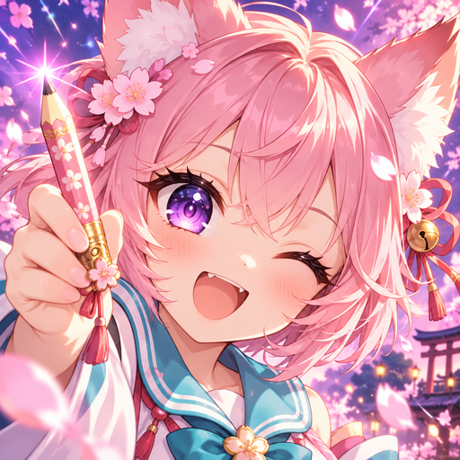
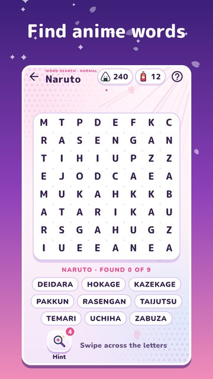

Otaku Words
Anime word search
Anime word search for everyone who watches anime and loves word games. Find the words: heroes, techniques, places and otaku slang, and build your own dictionary!
Swipe across the letters and the word lights up as a glowing ribbon with sakura petals. Find them all: "Sugoi!"

- 15 themes: heroes and worlds of popular anime, otaku slang, Japanese food and Japanese culture.
- 150 English and 300 Russian word searches: from easy 5×5 fields to boss arcs with a hidden list.
- A daily word search, the same for everyone; missed ones from the past week wait in the archive.
- A word of the day and your dictionary: every word you find with a short note, no spoilers.
- Yuki, the otaku fox-girl, cheers your wins and sends you postcards.
- Daily tasks and a weekly goal, achievements and ranks from kohai to anime legend.
- Festivals: New Year, Hanami and Tanabata with keepsake pins.
- Onigiri and omamori instead of coins; a hint circles a word's first letter.
- Large letters, a timed mode, an optional quiet reminder.
- Play offline. No purchases.
Ganbatte, find every word!